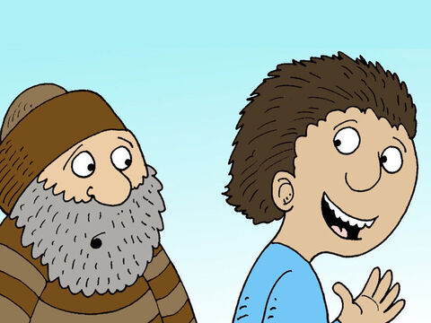
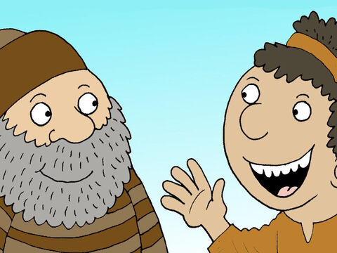
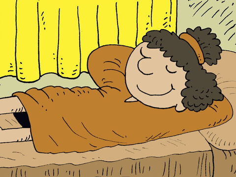

The Parable Of The Two Sons
But what think ye? A certain man had two sons; and he came to the first, and said, Son, go work to day in my vineyard.
He answered and said, I will not: but afterward he repented, and went.
And he came to the second, and said likewise. And he answered and said, I go, sir: and went not.
Whether of them twain did the will of his father? They say unto him, The first. Jesus saith unto them, Verily I say unto you, That the publicans and the harlots go into the kingdom of God before you.
For John came unto you in the way of righteousness, and ye believed him not: but the publicans and the harlots believed him: and ye, when ye had seen it, repented not afterward, that ye might believe him.
Matthew 21:28-32
- 
- 
- 